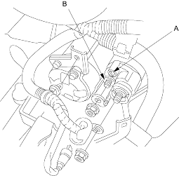
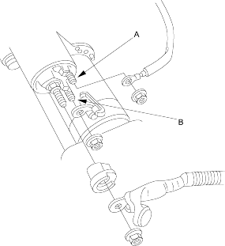

- Check the hold-in coil for continuity between the S terminal (A) and the armature housing (ground).
There should be continuity.
- If there is continuity, go to step 2.
- If there is no continuity, replace the solenoid.
Except D16V1 (KG, KR, KS models) engine with M/T

D16V1 (KG, KR, KS models) engine with M/T

- Check the pull-in coil for continuity between the S terminal (A) and M terminal (B). There should be continuity.
- If there is continuity, the solenoid is OK.
- If there is no continuity, replace the solenoid.